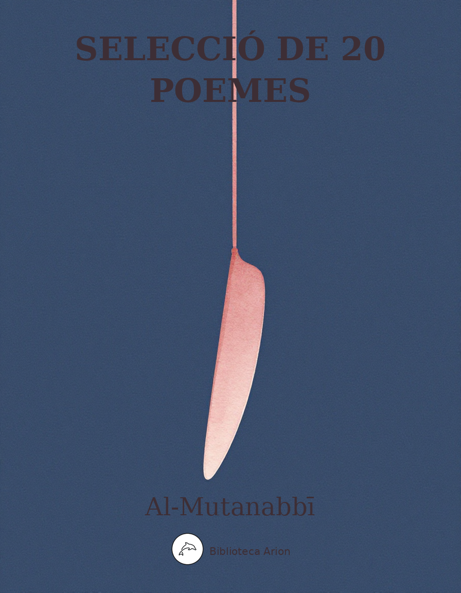

Selecció de 20 poemes
مختارات من ديوان المتنبي
Selecció dels vint poemes més cèlebres d'al-Mutanabbī, considerat el poeta àrab més gran de tots els temps. Inclou qasides sobre l'ambició, el coratge, la pèrdua i la condició humana.
Font: Domini públic (segle X dC) Abū al-Ṭayyib Aḥmad ibn al-Ḥusayn al-Mutanabbī (أبو الطيب أحمد بن الحسين المتنبي, 915–965 dC)
1. على قدر أهل العزم تأتي العزائم
ʿAlà qadr ahl al-ʿazm taʾtī al-ʿazāʾim
عَلى قَدرِ أَهلِ العَزمِ تَأتي العَزائِمُ وَتَأتي عَلى قَدرِ الكِرامِ المَكارِمُ
وَتَعظُمُ في عَينِ الصَغيرِ صِغارُها وَتَصغُرُ في عَينِ العَظيمِ العَظائِمُ
يُكَلِّفُ سَيفُ الدَولَةِ الجَيشَ هَمَّهُ وَقَد عَجَزَت عَنهُ الجُيوشُ الخَضارِمُ
وَيَطلُبُ عِندَ الناسِ ما عِندَ نَفسِهِ وَذلِكَ ما لا تَدَّعيهِ الضَراغِمُ
يُفَدّي أَتَمُّ الطَيرِ عُمرًا سِلاحُهُ نُسورُ المَلا أَحداثُها وَالقَشاعِمُ
وَما ضَرَّها خَلقٌ بِغَيرِ مَخالِبٍ وَقَد خُلِقَت أَسيافُهُ وَالقَوائِمُ
هَلِ الحَدَثُ الحَمراءُ تَعرِفُ لَونَها وَتَعلَمُ أَيُّ الساقِيَينِ الغَمائِمُ
سَقَتها الغَمامُ الغُرُّ قَبلَ نُزولِهِ فَلَمّا دَنا مِنها سَقَتها الجَماجِمُ
بَناها فَأَعلى وَالقَنا يَقرَعُ القَنا وَمَوجُ المَنايا حَولَها مُتَلاطِمُ
وَكانَ بِها مِثلُ الجُنونِ فَأَصبَحَت وَمِن جُثَثِ القَتلى عَلَيها تَمائِمُ
2. واحرّ قلباه ممن قلبه شبم
Wā ḥarr qalbāh mimman qalbuhu shabim
وَاحَرَّ قَلباهُ مِمَّن قَلبُهُ شَبِمُ وَمَن بِجِسمي وَحالي عِندَهُ سَقَمُ
ما لي أُكَتِّمُ حُبًّا قَد بَرى جَسَدي وَتَدَّعي حُبَّ سَيفِ الدَولَةِ الأُمَمُ
إِن كانَ يَجمَعُنا حُبٌّ لِغُرَّتِهِ فَلَيتَ أَنّا بِقَدرِ الحُبِّ نَقتَسِمُ
قَد زُرتُهُ وَسُيوفُ الهِندِ مُغمَدَةٌ وَقَد نَظَرتُ إِلَيهِ وَالسُيوفُ دَمُ
فَكانَ أَحسَنَ خَلقِ اللَهِ كُلِّهِمِ وَكانَ أَحسَنَ ما في الأَحسَنِ الشِيَمُ
فَوتُ العَدُوِّ الَّذي يَمَّمتَهُ ظَفَرٌ في طَيِّهِ أَسَفٌ في طَيِّهِ نِعَمُ
قَد نابَ عَنكَ شَديدُ الخَوفِ وَاِصطَنَعَت لَكَ المَهابَةُ ما لا تَصنَعُ البُهَمُ
أَلزَمتَ نَفسَكَ شَيئًا لَيسَ يَلزَمُها أَن لا يُوارِيَهُم أَرضٌ وَلا عَلَمُ
أَكُلَّما رُمتَ جَيشًا فَاِنثَنى هَرَبًا تَصَرَّفَت بِكَ في آثارِهِ الهِمَمُ
3. أنا الذي نظر الأعمى إلى أدبي
Anā alladhī naẓara al-aʿmà ilà adabī
أَنا الَّذي نَظَرَ الأَعمى إِلى أَدَبي وَأَسمَعَت كَلِماتي مَن بِهِ صَمَمُ
أَنامُ مِلءَ جُفوني عَن شَوارِدِها وَيَسهَرُ الخَلقُ جَرّاها وَيَختَصِمُ
وَجاهِلٍ مَدَّهُ في جَهلِهِ ضَحِكي حَتّى أَتَتهُ يَدٌ فَرّاسَةٌ وَفَمُ
إِذا نَظَرتَ نُيوبَ اللَيثِ بارِزَةً فَلا تَظُنَّنَّ أَنَّ اللَيثَ يَبتَسِمُ
وَمُهجَةٍ مُهجَتي مِن هَمِّ صاحِبِها أَدرَكتُها بِجَوادٍ ظَهرُهُ حَرَمُ
رِجلاهُ في الرَكضِ رِجلٌ وَاليَدانِ يَدٌ وَفِعلُهُ ما تُريدُ الكَفُّ وَالقَدَمُ
وَمُرهَفٍ سِرتُ بَينَ الجَحفَلَينِ بِهِ حَتّى ضَرَبتُ وَمَوجُ المَوتِ يَلتَطِمُ
الخَيلُ وَاللَيلُ وَالبَيداءُ تَعرِفُني وَالسَيفُ وَالرُمحُ وَالقِرطاسُ وَالقَلَمُ
4. الخيل والليل والبيداء تعرفني
Al-khayl wal-layl wal-baydāʾ taʿrifunī
Nota: aquest vers cèlebre pertany al poema anterior (قصيدة «أنا الذي نظر الأعمى»). Aquí s’inclou el context complet de la qasida on apareix, que és una de les més extenses del divan.
صَحِبَ الناسُ قَبلَنا ذا الزَمانا وَعَناهُم مِن شَأنِهِ ما عَنانا
وَتَوَلّوا بِغُصَّةٍ كُلُّهُم مِن هُ وَإِن سَرَّ بَعضَهُم أَحيانا
رُبَّما تُحسِنُ الصَنيعَ لَيالي هُ وَلَكِن تُكَدِّرُ الإِحسانا
وَكَأَنّا لَم يَرضَ فينا بِرَيبِ ال دَهرِ حَتّى أَعانَهُ مَن أَعانا
كُلَّما أَنبَتَ الزَمانُ قَناةً رَكَّبَ المَرءُ في القَناةِ سِنانا
وَمُرادُ النُفوسِ أَصغَرُ مِن أَن نَتَعادى فيهِ وَأَن نَتَفانى
غَيرَ أَنَّ الفَتى يُلاقي المَنايا كالِحاتٍ وَلا يُلاقي الهَوانا
وَلَوَ أَنَّ الحَياةَ تَبقى لِحَيٍّ لَعَدَدنا أَضَلَّنا الشُجعانا
وَإِذا لَم يَكُن مِنَ المَوتِ بُدٌّ فَمِنَ العَجزِ أَن تَموتَ جَبانا
5. إذا غامرت في شرف مروم
Idhā ghāmarta fī sharaf marūm
إِذا غامَرتَ في شَرَفٍ مَرومِ فَلا تَقنَع بِما دونَ النُجومِ
فَطَعمُ المَوتِ في أَمرٍ حَقيرٍ كَطَعمِ المَوتِ في أَمرٍ عَظيمِ
يَرى الجُبَناءُ أَنَّ العَجزَ عَقلٌ وَتِلكَ خَديعَةُ الطَبعِ اللَئيمِ
وَكُلُّ شَجاعَةٍ في المَرءِ تُغني وَلا مِثلَ الشَجاعَةِ في الحَكيمِ
وَكَم مِن عائِبٍ قَولًا صَحيحًا وَآفَتُهُ مِنَ الفَهمِ السَقيمِ
وَلَكِن تَأخُذُ الآذانُ مِنهُ عَلى قَدرِ القَرائِحِ وَالعُلومِ
6. كفى بك داءً أن ترى الموت شافيا
Kafā bika dāʾan an tarà al-mawt shāfiyā
كَفى بِكَ داءً أَن تَرى المَوتَ شافِيا وَحَسبُ المَنايا أَن يَكُنَّ أَمانِيا
تَمَنَّيتَها لَمّا تَمَنَّيتَ أَن تَرى صَديقًا فَأَعيا أَو عَدُوًّا مُداجِيا
إِذا كُنتَ تَرضى أَن تَعيشَ بِذِلَّةٍ فَلا تَستَعِدَّنَّ الحُسامَ اليَمانِيا
وَلا تَستَطيلَنَّ الرِماحَ لِغارَةٍ وَلا تَستَجيدَنَّ العِتاقَ المَذاكِيا
فَما يَنفَعُ الأُسدَ الحَياءُ مِنَ الطَوى وَلَم تَرَ في الغاباتِ أُسدًا نَواحِيا
وَلا خَيرَ في دَفعِ الرَدى بِمَذَلَّةٍ كَما رَدَّها يَومًا بِسَيفٍ حُسامِيا
طِبيعَةُ يَأسٍ مِنكَ أَعجَبُ خُلَّةٍ فَإِن لَم تَجِدها فيكَ فَاِلتَمِسِ العُلا
ذَريني أَنَل ما لا يُنالُ مِنَ العُلا فَصَعبُ العُلا في الصَعبِ وَالسَهلُ في السَهلِ
7. لا خيل عندك تهديها ولا مال
Lā khayl ʿindak tuhdīhā wa-lā māl
لا خَيلَ عِندَكَ تُهديها وَلا مالُ فَليُسعِدِ النُطقُ إِن لَم تُسعِدِ الحالُ
لَو كُلُّ كَلبٍ عَوى أَلقَمتُهُ حَجَرًا لَأَصبَحَ الصَخرُ مِثقالًا بِمِثقالِ
ما أَبعَدَ العَيبَ وَالنُقصانَ عَن شَرَفي أَنا الثُرَيّا وَذانِ الشَيبُ وَالهالِ
لا تَشتَرِ العَبدَ إِلّا وَالعَصا مَعَهُ إِنَّ العَبيدَ لَأَنجاسٌ مَناكيدُ
مَن عَلَّمَ الأَسوَدَ المَخصِيَّ مَكرُمَةً أَقَومَهُ البيضُ أَم آباؤُهُ الصيدُ
أَنكَرتَ طاعَنَها الرُمحانِ واِنصَرَفَت قَناتُها مِن دَمِ الأَبطالِ مَفتولَة
8. عيد بأية حال عدت يا عيد
ʿĪd bi-ayyi ḥāl ʿudta yā ʿīd
عيدٌ بِأَيَّةِ حالٍ عُدتَ يا عيدُ بِما مَضى أَم بِأَمرٍ فيكَ تَجديدُ
أَمّا الأَحِبَّةُ فَالبَيداءُ دونَهُمُ فَلَيتَ دونَكَ بيدًا دونَها بيدُ
لَولا العُلا لَم تَجُب بي ما أَجوبُ بِها وَجناءَ حَرفٍ وَلا جَرداءَ قَيدودِ
وَكانَ أَطيَبَ مِن سَيفي مُضاجَعَةً أَشباهُ رَونَقِهِ الغيدُ الأَماليدُ
لَم يَترُكِ الدَهرُ مِن قَلبي وَلا كَبِدي شَيئًا تُتَيِّمُهُ عَينٌ وَلا جيدُ
يا ساقِيَيَّ أَخَمرٌ في كُؤوسِكُما أَم في كُؤوسِكُما هَمٌّ وَتَسهيدُ
أَصَخرَةٌ أَنا ما لي لا تُحَرِّكُني هَذي المُدامُ وَلا هَذي الأَغاريدُ
إِذا أَرَدتَ كِتابَ اللَهِ فَارِسًا ما رَدَّ عَن وِجهَةٍ عَزمًا وَلا جودُ
9. أرق على أرق ومثلي يأرق
Araq ʿalà araq wa-mithlī yaʾraq
أَرَقٌ عَلى أَرَقٍ وَمِثلي يَأرَقُ وَجَوًى يَزيدُ وَعَبرَةٌ تَتَرَقرَقُ
جُهدُ الصَبابَةِ أَن تَكونَ كَما أَرى عَينٌ مُسَهَّدَةٌ وَقَلبٌ يَخفِقُ
ما لاحَ بَرقٌ أَو تَرَنَّمَ طائِرٌ إِلّا اِنثَنَيتُ وَلي فُؤادٌ شَيِّقُ
جَرَّبتُ مِن نارِ الهَوى ما تَنطَفي نارُ الغَضا وَتَكِلُّ عَمّا تُحرِقُ
وَعَذَلتُ أَهلَ العِشقِ حَتّى ذُقتُهُ فَعَجِبتُ كَيفَ يَموتُ مَن لا يَعشَقُ
وَعَذَرتُهُم وَعَرَفتُ ذَنبي أَنَّني عَيَّرتُهُم فَلَقيتُ مِنهُ ما لَقوا
أَبَني أَبينا نَحنُ أَهلُ مَنازِلٍ أَبَدًا غُرابُ البَينِ فيها يَنعَقُ
نَبكي عَلى الدُنيا وَما مِن مَعشَرٍ جَمَعَتهُمُ الدُنيا فَلَم يَتَفَرَّقوا
10. أي محل أرتقي أي عظيم أتقي
Ayy maḥall artaqī ayy ʿaẓīm attaqī
أَيُّ مَحَلٍّ أَرتَقي أَيُّ عَظيمٍ أَتَّقي وَكُلُّ ما قَد خَلَقَ اللَهُ وَما لَم يَخلُقِ
مُحتَقَرٌ في هِمَّتي كَشَعرَةٍ في مَفرِقي أَينَ المَكانُ الَّذي يَرقى بِهِ مَن يَرتَقي
بَلَغتُ بِالعَزمِ مَبلَغًا ما وَصَلَتهُ بالسُفُنِ وَحُلتُ بِالهِمَّةِ حَيثُ لا تَحُلُّ رِجلُ وَلا بَدَنِ
أَتَمنّى عَلَى الزَمانِ مُحالا لا يُسَدُّ بِما سَواهُ خَلَلُ
ما مَقامي بِأَرضِ نَخلَةَ إِلّا كَمَقامِ المَسيحِ بَينَ الرُسُلِ
أَنا في أُمَّةٍ تَدارَكَها اللَهُ غَريبٌ كَصالِحٍ في ثَمودِ
11. لكل امرئ من دهره ما تعوّدا
Li-kull imriʾ min dahrihi mā taʿawwadā
لِكُلِّ اِمرِئٍ مِن دَهرِهِ ما تَعَوَّدا وَعادَةُ سَيفِ الدَولَةِ الطَعنُ في العِدا
هُوَ البَحرُ مِن أَيِّ النَواحي أَتَيتَهُ فَلُجَّتُهُ المَعروفُ وَالجودُ ساحِلُ
تَعَوَّدَ بَسطَ الكَفِّ حَتّى لَوَ اَنَّهُ ثَناها لِقَبضٍ لَم تُطِعهُ أَنامِلُ
وَلَو لَم يَكُن في كَفِّهِ غَيرُ رُوحِهِ لَجادَ بِها فَليَتَّقِ اللَهَ سائِلُ
فَلا وَرِقٌ يَبقى عَلَيهِ وَلا ذَهَبٌ وَلا هُوَ إِلّا كَالسَحابِ الحَوافِلُ
وَما لِامرِئٍ دَهرٌ يُفيتُ حَياتَهُ إِذا كانَ ذا عَزمٍ كَما أَنتَ فاعِلُ
12. بم التعلل لا أهل ولا وطن
Bi-ma al-taʿallul lā ahl wa-lā waṭan
بِمَ التَعَلُّلُ لا أَهلٌ وَلا وَطَنُ وَلا نَديمٌ وَلا كَأسٌ وَلا سَكَنُ
أُريدُ مِن زَمَني ذا أَن يُبَلِّغَني ما لَيسَ يَبلُغُهُ مِن نَفسِهِ الزَمَنُ
لا تَلقَ دَهرَكَ إِلّا غَيرَ مُكتَرِثٍ ما دامَ يَصحَبُ فيهِ روحَكَ البَدَنُ
فَما يَدومُ سُرورُ ما سُرِرتَ بِهِ وَلا يَرُدُّ عَلَيكَ الفائِتَ الحَزَنُ
مِمّا أَضَرَّ بِأَهلِ العِشقِ أَنَّهُمُ هَوَوا وَما عَرَفوا الدُنيا وَما فُطِنوا
تَفنى عُيونُكُمُ دَمعًا وَأَنفُسُكُم حُزنًا وَذا الدَهرُ لا يَبقى لَهُ ثَمَنُ
أَبلى الهَوى أَسَفًا يَومَ النَوى بَدَني وَفَرَّقَ الهَجرُ بَينَ الجَفنِ وَالوَسَنِ
قَد كانَ أَوهَمَني أَنَّ الحَياةَ لَها بَعدَ المَشيبِ مَآبٌ ثُمَّ ما كانا
13. على قلق كأن الريح تحتي
ʿAlà qalaq kaʾanna al-rīḥ taḥtī
عَلى قَلَقٍ كَأَنَّ الريحَ تَحتي أُوَجِّهُها جَنوبًا أَو شَمالا
أُحاوِلُ رِفعَةً مِن ذي رِفاعٍ وَذي الشَرَفُ الرَفيعُ يَزيدُ مالا
وَلا أُمسي لِأَرضٍ دونَ أَرضٍ مُقيمًا مَن تَعَوَّدَ الاِرتِحالا
وَفي البَحرِ القَذى وَرِمالُ بَرٍّ إِذا فاضَ البِحارُ غَدَونَ آلا
كَأَنَّ بَني المَخاضَةِ يَحسَبونا لَنا فَوقَ المَنابِرِ ما نَقولا
وَأَصبَحَ شِعرُنا مُتَمَسِّكًا بِ تَلابيبِ الزَمانِ طَريدَ حالا
14. ما بقومي شرفت بل شرفوا بي
Mā bi-qawmī sharaftu bal sharafū bī
ما بِقَومي شَرُفتُ بَل شَرُفوا بي وَبِنَفسي فَخَرتُ لا بِجُدودي
وَبِهِم فَخرُ كُلِّ مَن نَطَقَ الضا دَ وَعَوذُ الجاني وَغَوثُ الطَريدِ
أَنا طالِبٌ ما الزَمانُ مُبَلِّغي هُ وَلا الراسِياتُ مِنَ الجِبالِ
وَبِعَزمي سَمَوتُ لا بِسِلاحي وَعَلَوتُ الزَمانَ لا بِمَوالي
أَيُّ يَومٍ سَرَرتَني بِوِصالٍ بَعدَ يَأسٍ فَكُنتَ غَيثَ جَديبي
وَبَقائي بَقاءُ ما أَنا فيهِ وَفَنائي فَناؤُهُ لا فَنائي
15. فؤاد ما تسليه المدام
Fuʾād mā tusallīhi al-mudām
فُؤادٌ ما تُسَلّيهِ المُدامُ وَدَهرٌ لا تُغَيِّرُهُ الليالي
وَعِلمي بِاِنقِضاءِ الصَبرِ عَنّي كَعِلمي بِاِنقِضاءِ الصَبرِ عَنكا
حَبيبَةُ قَلبِيَ المَعلولِ فيها مُشارَكَتي لَها في كُلِّ شَأنِ
وَأَحلامُ الفُؤادِ رُؤًى بَصيرٍ وَلَيسَت كُلُّ أَحلامِ المَنامِ
عَلَيكِ سَلامُ مَن شُغِلَت دُموعي عَنِ العُذّالِ فيهِ بِالسِقامِ
وَما هُوَ مِن نُحولي في ضُلوعي وَلَكِنَّ الفُؤادَ عَلى اِلتِهابِ
لَعَلَّكِ في قِيامَةِ يَومِ بَينٍ صَبورًا إِن رَأَيتِ دُموعَ قَومِ
وَما مِنّي المَقامُ بِحَيثُ يُقضى عَلَيَّ وَلا أَرى ما يُستَطابُ
16. أبا المسك أشتاق إليك نوازع
Abā al-Misk ashtāq ilayk nawāziʿ
أَبا المِسكِ أَشتاقُ إِلَيكَ نَوازِعٌ نَوازِعُ يُحنِنَّ القَلوصَ بِراكِبِ
تُخَبِّرُنا الأَرضُ المُصَوَّرُ أَنَّها لَكَ الأَرضُ فاِبسُط مِن يَدَيكَ حَسابِ
وَأَنتَ الَّذي بَلَّغتَ ما هُوَ بالِغٌ مِنَ المَجدِ وَالدُنيا لِأَعلى مَراتِبِ
فَإِن تَفُقِ الأَنامَ وَأَنتَ مِنهُم فَإِنَّ المِسكَ بَعضُ دَمِ الغَزالِ
وَما أَنا مِنكَ في حالٍ بِأَحسَنَ مِن هَواكَ في القَلبِ مِنكَ بِمَنزِلَة
إِذا أَنتَ أَكرَمتَ الكَريمَ مَلَكتَهُ وَإِن أَنتَ أَكرَمتَ اللَئيمَ تَمَرَّدا
وَوَضعُ النَدى في مَوضِعِ السَيفِ بِالعُلا مُضِرٌّ كَوَضعِ السَيفِ في مَوضِعِ النَدى
17. خلقت ألوفاً لو رجعت إلى الصبا
Khuliqtu alūfan law rajaʿtu ilà al-ṣibā
خُلِقتُ أَلوفًا لَو رَجَعتُ إِلى الصِبا لَفارَقتُ شَيبي موجَعَ القَلبِ باكِيا
وَما كُنتُ مِمَّن يَدخُلُ العِشقُ قَلبَهُ وَلَكِنَّ مَن يُبصِر جُفونَكِ يَعشَقِ
يَضيقُ بِها الفِعلُ المُضارِعُ ذَرعُهُ وَتَركُضُ في مَيدانِهِ الفِعلَةُ الرِجالا
وَأَطعَنُ مِن عينَيكِ في كُلِّ مُهجَةٍ وَلَكِنَّ سَهمَيهِنَّ قَتلاهُ كُثرُ
وَتَخفى عَلَيَّ القَصدُ وَالحَربُ عامِلٌ فَكَيفَ إِذا ما اِشتَبَكَت بِالمَقاصِدِ
18. فراق ومن فارقت غير مذمم
Firāq wa-man fāraqtu ghayr mudhamm
فِراقٌ وَمَن فارَقتُ غَيرُ مُذَمَّمِ وَأَمٌّ وَمَن يَمَّمتُ خَيرُ مُيَمَّمِ
وَكَم قَد تَرَكنا بِالعِراقِ عَلى جَوًى أَخًا وَصَديقًا مُصلَتًا كُلَّ مُصلَتِ
كَفى بِفِراقِ المُتَنَبّي فَجيعَةً وَإِن كانَ ذا صَبرٍ عَلى كُلِّ مُعضِلِ
ذَريني أَنَل ما لا يُنالُ مِنَ العُلا فَصَعبُ العُلا في الصَعبِ وَالسَهلُ في السَهلِ
تُريدينَ لُقيانَ المَعالي رَخيصَةً وَلا بُدَّ دونَ الشَهدِ مِن إِبَرِ النَحلِ
لا يَسلَمُ الشَرَفُ الرَفيعُ مِنَ الأَذى حَتّى يُراقَ عَلى جَوانِبِهِ الدَمُ
يَقولُ لَكَ المَرآةُ ما أَنتَ ناظِرٌ وَلَن تَرَ نَفسَ المَرءِ غَيرُ نُفوسِ
19. كفى بجسمي نحولاً أنني رجل
Kafā bi-jismī nuḥūlan annanī rajul
كَفى بِجِسمي نُحولًا أَنَّني رَجُلٌ لَولا مُخاطَبَتي إِيّاكَ لَم تَرَني
وَبي مِثلُ ما أَبكى وَأَضحَكُ غَيرَهُ وَلَكِنَّ في صَدري مَكانَ دُموعي
وَما الدَهرُ أَهلٌ أَن تُؤَمَّلَ عِندَهُ حَياةٌ وَأَن يُشتاقَ فيهِ إِلى النَسلِ
وَلَكِنَّهُ فَرضٌ عَلى كُلِّ مُؤمِنٍ بِأَن يَتَشاغَى عَن تَحامُقِ أَهلِهِ
وَما الخِلُّ إِلّا مَن أَوَدُّ بِقَلبِهِ يَراني طَويلَ العُمرِ ما عُمرُهُ قَصيرُ
وَلَم أَرَ في عُيوبِ الناسِ عَيبًا كَنَقصِ القادِرينَ عَلى التَمامِ
أُعيذُها نَظَراتٍ مِنكَ صائِبَةً أَن تَحسَبَ الشَحمَ فيمَن شَحمُهُ وَرَمُ
20. أقمنا بها يوماً ويوماً وثالثاً
Aqamnā bihā yawman wa-yawman wa-thālithā
أَقَمنا بِها يَومًا وَيَومًا وَثالِثًا وَيَومًا لَهُ يَومُ التَرَحُّلِ خامِسُ
عَلى مِثلِها مِن أَرضِ مِصرَ وَجَنَّةٍ طَلَعنا عَلى وَجهِ الزَمانِ طَلائِعُ
وَلَمّا صارَ وُدُّ الناسِ خِبًّا جَزَيتُ عَلى اِبتِسامٍ بِاِبتِسامِ
وَصِرتُ أَشُكُّ فيمَن أَصطَفيهِ لِعِلمي أَنَّهُ بَعضُ الأَنامِ
يُحِبُّ العاقِلونَ عَلى التَصافي وَحُبُّ الجاهِلينَ عَلى الوَسامِ
وَأَقبَلَ يَمشي في البِساطِ فَما دَرى أَلِلبِساطِ عَلَيهِ أَم عَلَيهِ بِساطُ
وَآنَسَ مِنّا حَيثُ كانَ عَلى الطَوى كَريمًا يُعَزّيهِ عَنِ المالِ تالِدُ
وَما مِن شَديدٍ يَبتَغي الذَّمَّ أَن يُرى لِأَنَّ حَبيبَ النَفسِ يُؤلِمُ صائِدُ
تم بعون الله — مختارات عشرين قصيدة من ديوان المتنبي Compilació completada — Selecció de 20 poemes del Dīwān d’al-Mutanabbī
Selecció de 20 poemes
Al-Mutanabbī (أبو الطيب المتنبي, 915–965 dC)
Traduït de l’àrab per Biblioteca Arion
1. Segons la grandesa dels homes vénen les grans empreses
Segons la grandesa dels homes vénen les grans empreses, i segons la noblesa dels generosos, les proeses.
Allò petit es fa gran als ulls del petit, i allò gran es fa petit als ulls del grandiós.
Sayf al-Dawla imposa al seu exèrcit la seva ambició, quan els exèrcits més veterans n’han estat incapaços.
Demana als homes allò que ell mateix posseeix, i això és cosa que ni els lleons gosarien reclamar.
Les seves armes redimeixen l’ocell de vida més llarga: les àguiles del camp, les joves i les velles.
Què li fa que les criatures no tinguin urpes, si les seves espases i empunyadures han estat forjades?
Sap la fortalesa vermella de quin color és, i sap quin dels dos copaires són els núvols?
Els núvols blancs la van regar abans de baixar-hi ell, i quan s’hi acostà, la van regar els cranis.
La va bastir, i la va alçar, mentre llança colpejava llança, i les onades de la mort l’envoltaven bramant.
Hi havia en ella com una follia, però al matí les despulles dels morts li feien de talismans.
2. Ai, la cremor del meu cor per qui té el cor fred!
Ai, la cremor del meu cor per qui té el cor fred! Per qui el meu cos i el meu estat són malaltia.
Per què amago un amor que m’ha consumit el cos, mentre les nacions senceres proclamen amor a Sayf al-Dawla?
Si ens uneix l’amor pel seu esplendor, tant de bo ens repartíssim segons la mesura de l’amor!
L’he visitat quan les espases de l’Índia dormien a les beines, i l’he contemplat quan les espases eren sang.
Era el més bell de totes les criatures de Déu, i el més bell del que hi ha en el bell era el seu caràcter.
Que l’enemic que cercaves hagi fugit és victòria: en el seu plec hi ha pena, i en el seu plec, favors.
La por intensa t’ha substituït, i el temor reverencial ha fet per tu allò que no fan els guerrers.
T’has imposat una cosa que no et calia: que no els amagui ni terra ni bandera.
Cada cop que ataces un exèrcit i fuig derrotat, les teves ambicions et porten darrere les seves petjades.
3. Jo soc aquell la poesia del qual l’ha vista el cec
Jo soc aquell la poesia del qual l’ha vista el cec, i les meves paraules les ha sentides el sord.
Dormo amb les parpelles plenes mentre els meus versos volen, i la gent vetlla per causa d’ells i discuteix.
I quant a l’ignorant que el meu riure engrandí en la seva ignorància, fins que li va arribar una mà que endevinava, i una boca.
Si veus les dents del lleó tretes, no et pensis pas que el lleó somriu.
I quanta ànima — la meva ànima patia pel seu amo — la vaig salvar amb un corser l’esquena del qual és un santuari.
Les seves potes en la galopada són una sola pota, i les dues mans una sola mà, i el seu acte és allò que volen la mà i el peu.
I amb una espasa afilada vaig avançar entre dos exèrcits, i vaig colpejar mentre les onades de la mort batien.
Els cavalls i la nit i el desert em coneixen, i l’espasa i la llança i el paper i la ploma.
4. Els cavalls i la nit i el desert em coneixen
Nota: aquest vers cèlebre pertany al poema anterior. Aquí s’inclou la qasida sobre el temps i el destí.
Els homes abans de nosaltres ja van conviure amb aquest temps, i els va preocupar del seu afer allò que ens preocupa.
Se’n van anar tots amb un nus a la gola — encara que a alguns els va alegrar de tant en tant.
Potser les seves nits fan un favor, però després enterboleixen la bondat.
I com si no n’hi hagués prou amb les desgràcies del destí, fins i tot hi va ajudar qui hi va ajudar.
Cada cop que el temps fa créixer una canya, l’home hi munta una punta de llança.
El desig de les ànimes és massa petit perquè ens barallem i ens destruïm per ell.
Llevat que el jove afronta la mort amb cara dura, però no afronta la humiliació.
I si la vida fos eterna per a cap ésser viu, consideraríem els més valents els més extraviats.
I si de la mort no hi ha escapatòria, de covard és morir de covardia.
5. Si t’aventures per un honor sublim
Si t’aventures per un honor sublim, no et conformis amb res per sota dels estels.
El gust de la mort en un afer mesquí és com el gust de la mort en un afer grandiós.
Els covards creuen que la impotència és seny, i aquest és l’engany del caràcter vil.
Tota valentia en l’home és profitosa, però no n’hi ha cap com la valentia en el savi.
I quants hi ha que critiquen una paraula encertada quan la seva tara és l’enteniment malalt!
Però les orelles en prenen segons la mesura dels enginys i els sabers.
6. Prou malaltia és que vegis la mort com a remei
Prou malaltia és que vegis la mort com a remei, i prou amb les desgràcies que siguin desitjos.
Les vas desitjar quan vas desitjar trobar un amic sincer, i no el vas trobar, o un enemic que dissimulés.
Si et conformen viure en la humiliació, no et preparis l’espasa iemenita.
Ni allarguis les llances per a la ràtzia, ni busquis els pura sang ben alimentats.
De què els serveix als lleons la vergonya de la fam, si mai no veuràs lleons als boscos plorant?
No hi ha cap bé en rebutjar la mort amb la vilesa, com ell la va rebutjar un dia amb l’espasa.
La desesperança per tu és el caràcter més estrany: si no la trobes en tu, cerca la grandesa.
Deixa’m assolir allò que no s’assoleix de la grandesa, que la grandesa difícil és en el difícil, i la facilitat en el fàcil.
7. No tens cavalls per oferir, ni diners
No tens cavalls per oferir, ni diners: que t’ajudi la paraula si no t’ajuda la fortuna.
Si a cada gos que borda li tiressis una pedra, les roques s’haurien esgotat pedra a pedra.
Que lluny són el defecte i la mancança del meu honor! Jo soc les Plèiades, i aquells dos són la cana i l’halo.
No compris l’esclau si no ve amb el bastó, que els esclaus són impurs i maleïts.
Qui ha ensenyat noblesa al negre castrat? La seva gent blanca, o els seus ancestres il·lustres?
Vas negar les seves llancejades amb llances, i es va girar amb la seva canya tenyida de la sang dels herois.
8. Festa! En quina condició tornes, oh festa?
Festa! En quina condició tornes, oh festa? Amb el que ha passat, o amb alguna cosa nova?
Quant als éssers estimats, el desert els separa de mi: tant de bo entre tu i mi hi hagués desert rere desert.
Si no fos per la grandesa, no hauria travessat amb ella les camelles robustes ni les egües esveltes.
I era més dolç que la meva espasa al jaç les semblances del seu esclat, les belles d’ulls llanguents.
El destí no ha deixat del meu cor ni del meu fetge res que pugui enamorar un ull o un coll.
Oh, copaires meus! És vi el que hi ha a les vostres copes, o és angoixa i insomni?
Soc de pedra, jo, que no m’estremeix ni aquest vi ni aquests cants?
Si vols un cavaller del llibre de Déu, que no l’ha apartat de cap direcció ni la voluntat ni la generositat.
9. Insomni sobre insomni, i un com jo vetlla
Insomni sobre insomni, i un com jo vetlla, i una passió que creix, i una llàgrima que brolla.
L’esforç suprem de l’enyorança és ser com em veus: un ull sense son i un cor que batega.
Cada cop que un llamp brillava o un ocell cantava, em girava, i tenia el cor commogut.
He provat del foc de l’amor allò que apaga el foc de la brasa, i allò que fatiga el que crema.
Vaig retreure als enamorats fins que el vaig tastar, i em vaig meravellar de com pot morir qui no estima.
I els vaig perdonar, i vaig reconèixer la meva culpa: els vaig blasmar i vaig rebre el que ells van rebre.
Oh fills del nostre pare! Nosaltres som gent de cases on sempre el corb de la separació grasna.
Plorem pel món, i no hi ha cap poble que el món hagi reunit sense que es dispersés.
10. A quin lloc pujaré? A quin gran temeré?
A quin lloc pujaré? A quin gran temeré? Si tot el que Déu ha creat i el que no ha creat
és menyspreable en la meva ambició, com un cabell al meu cap. On és el lloc al qual puja qui puja?
He assolit amb la voluntat un lloc al qual no s’arriba amb vaixells, i he residit amb l’ambició on no resideix peu ni cos.
Desitjo del temps un impossible que cap altra cosa no pot omplir.
La meva estada a la terra de Nakhla no és sinó com l’estada del Messies entre els apòstols.
Jo soc en una nació que Déu va crear un estrany, com Sàlih entre els tamudites.
11. Cada home té del seu temps allò que n’ha après
Cada home té del seu temps allò que n’ha après, i el costum de Sayf al-Dawla és atacar l’enemic.
Ell és el mar: per qualsevol costat que hi arribis, el seu fons és la generositat i la bondat n’és la riba.
S’ha acostumat a obrir la mà fins al punt que si la volgués tancar, els seus dits no li obeïrien.
I si no tingués a la mà res més que la seva ànima, la donaria — que tingui temor de Déu qui li demani!
Ni plata hi queda, ni or, i ell no és sinó com els núvols carregats.
I cap home no té un destí que li prengui la vida si té una voluntat com la que tu tens.
12. Amb què entretenir-se? Ni família ni pàtria
Amb què entretenir-se? Ni família ni pàtria, ni company de copes, ni copa, ni llar.
Vull d’aquest temps meu que m’atorgui allò que el temps no pot atènyer per si mateix.
No afrontis el teu destí sinó sense preocupació, mentre l’ànima i el cos vagin junts.
Que no dura l’alegria d’allò que t’ha alegrat, ni la pena et retorna el que has perdut.
El que més ha perjudicat els enamorats és que van estimar sense conèixer el món ni entendre’l.
S’us consumeixen els ulls de llàgrimes i les ànimes de pena, i aquest temps no en val la pena.
L’amor va gastar de tristesa el meu cos el dia de l’adéu, i la separació va dividir la parpella del son.
Em va fer creure que la vida tenia un retorn després de l’envelliment — i mai no va ser.
13. Inquiet, com si el vent em portés
Inquiet, com si el vent fos sota meu, la dirigeixo cap al sud o cap al nord.
Busco l’alçada d’un home d’alçada, i el d’honor elevat encara guanya més.
I no m’aturo en cap terra qui s’ha acostumat a viatjar.
I al mar hi ha impureses, i arenes a la costa: quan els mars desborden, es tornen miratge.
Com si els fills del gual creguessin que el que diem des dels púlpits és per a nosaltres.
I la nostra poesia s’ha aferrat a les solapes del temps, fugitiva de la seva condició.
14. No és pel meu poble que m’he ennoblit, sinó ells per mi
No és pel meu poble que m’he ennoblit, sinó ells per mi, i de mi mateix m’enorgulleixo, no dels meus avantpassats.
I d’ells es vana tot aquell que pronuncia la lletra ḍād, i ells són el refugi del culpable i el socors del fugitiu.
Jo busco allò que el temps no em pot donar, ni les muntanyes fermes.
I amb la voluntat m’he elevat, no amb les armes, i he superat el temps, no amb els aliats.
Quin dia m’has alegrat amb una trobada després de la desesperança! Vas ser pluja del meu erm.
I la meva pervivència és la pervivència d’allò en què visc, i el meu acabament és el seu acabament, no el meu.
15. Un cor que el vi no consola
Un cor que el vi no consola, i un destí que les nits no canvien.
I el meu saber de l’esgotament de la paciència en mi és com el meu saber de l’esgotament de la paciència en tu.
L’estimada del meu cor malalt per ella, la meva companya en cada afer.
I els somnis del cor són visions d’un clarivident, i no tots els somnis del son ho són.
A tu, salutacions de qui les llàgrimes han ocupat els seus retrets contra els que l’estimaven, per la malaltia.
I no és per la meva primor dins les costelles, sinó que el cor està en flames.
Potser tu, en el judici final del dia de la partença, seràs pacient si veus les llàgrimes d’un poble.
I no és meva la residència allà on es decreta contra meu, ni veig res que m’agradi.
16. Oh Abū al-Misk! Cap a tu m’estiren enyorances
Oh Abū al-Misk! Cap a tu m’estiren enyorances, enyorances que fan gemegar la camella amb el seu genet.
La terra representada ens diu que la terra és teva: estén les teves mans al compte.
I tu ets qui has portat al cim de la glòria i del món les posicions més altes.
I si superes els humans tot sent un d’ells, és que el mesc és part de la sang de la gasela.
I jo no estic en millor estat respecte a tu que el teu amor en el cor respecte a tu.
Si honores el noble, el posseeixes; i si honores el vil, es rebel·la.
I posar la generositat al lloc de l’espasa fa mal a la grandesa, com posar l’espasa al lloc de la generositat.
17. He estat creat afectuós: si tornés a la joventut
He estat creat afectuós: si tornés a la joventut, deixaria les meves canes amb el cor adolorit, plorant.
I no era jo de qui l’amor entra al cor, però qui veu les teves parpelles s’enamora.
El verb imperfectiu se li fa estret, i l’acció dels homes galopa pel seu camp.
I més penetrants que els teus ulls en cada ànima! Però les seves dues fletxes, els seus morts són molts.
I se m’amaga la intenció quan la guerra és activa: com serà quan s’embullin amb els propòsits?
18. Partença! I de qui m’he separat no és de blasmar
Partença! I de qui m’he separat no és de blasmar, i destinació! I cap a qui vaig és el millor destí.
Quants n’hem deixat a l’Iraq amb dolor: germà i amic, tots amb l’espasa en mà.
Prou desgràcia és la partença d’al-Mutanabbī, encara que ell sigui pacient davant tota adversitat.
Deixa’m assolir allò que no s’assoleix de la grandesa, que la grandesa difícil és en el difícil, i la facilitat en el fàcil.
Vols trobar la glòria a bon preu, però no es pot arribar a la mel sense les abelles.
No se salva l’honor elevat de la ferida fins que la sang es vessa pels seus costats.
El mirall et diu el que veus, però no veuràs l’ànima d’un home si no és per les ànimes.
19. Prou primor és per al meu cos que jo soc un home
Prou primor és per al meu cos que jo soc un home que si no fos perquè et parlo, no em veuries.
I en mi hi ha el que fa plorar i riure els altres, però al meu pit hi ha el lloc de les llàgrimes.
I el temps no mereix que s’hi esperi vida, ni que s’hi desitgi descendència.
Però és obligació de tot creient fer-se el desentès davant la niciesa de la seva gent.
I no hi ha amic sinó aquell el cor del qual em veu de llarga vida mentre la seva és curta.
I no he vist entre els defectes dels homes cap defecte com la mancança dels qui podrien ser complets.
Guardo les teves mirades certeres de creure que és greix en qui el greix és tumor.
20. Ens hi vam estar un dia, i un altre, i un tercer
Ens hi vam estar un dia, i un altre, i un tercer, i un dia el quart del qual és el dia de la partença.
En una terra com aquesta, una terra d’Egipte i jardí, vam aparèixer al rostre del temps com avantguarda.
I quan la lleialtat de la gent es va tornar engany, vaig respondre al somriure amb un somriure.
I vaig començar a desconfiar de qui trio, perquè sé que és part de la humanitat.
Els intel·ligents estimen per l’afinitat, i els ignorants estimen per l’aparença.
I va avançar caminant sobre la catifa sense saber si la catifa era sobre ell o ell sobre la catifa.
I va trobar de nosaltres, allà on fos, malgrat la fam, un generós a qui l’herència el consola de la riquesa.
I cap home fort no busca el blasme de ser vist, perquè l’estimat de l’ànima és dolorós de caçar.
Compilació completada — Selecció de 20 poemes del Dīwān d’al-Mutanabbī Traducció al català: Biblioteca Arion, 2026
Traducció de domini públic — CC BY-SA 4.0
Notes
Sobre l'autor
Abū al-Ṭayyib Aḥmad ibn al-Ḥusayn al-Mutanabbī (915–965 dC) és considerat el poeta àrab més gran de tots els temps. Nascut a Kufa (Iraq), va viure una vida errant entre les corts del món àrab medieval. El seu sobrenom, «al-Mutanabbī» (el que es fa passar per profeta), al·ludeix a un episodi de joventut en què suposadament va liderar una revolta de caràcter messiànic a Síria.
↩ Tornar al textSayf al-Dawla
Sayf al-Dawla (Espasa de l’Estat) fou l’emir hamdànida d’Alep (r. 944–967), principal mecenes d’al-Mutanabbī durant nou anys (948–957). Moltes de les qasides més cèlebres del poeta són panegírics dedicats a ell, celebrant les seves victòries contra l’Imperi Bizantí.
↩ Tornar al textEstructura de la qaṣīda
La qaṣīda (قصيدة) és la forma poètica àrab clàssica per excel·lència: una oda monorimada amb metre fix. L’estructura tradicional inclou un nasīb (preludi amorós), un raḥīl (descripció del viatge) i un madīḥ (lloança al mecenes). Al-Mutanabbī va transformar aquesta estructura amb la seva veu intensament personal.
↩ Tornar al textCriteris de traducció
Aquesta selecció presenta fragments dels poemes més antologats d’al-Mutanabbī. La traducció al català prioritza la fidelitat al sentit per damunt del metre o la rima, atès que la prosòdia àrab quantitativa (basada en síl·labes llargues i curtes) no té equivalent directe en català. S’ha intentat preservar les imatges, la força retòrica i el to sentenciós característic del poeta.
↩ Tornar al textLa lletra ḍād (poema 14)
El vers «tot aquell que pronuncia la lletra ḍād» (من نطق الضاد) és una metonímia per «tots els àrabs», ja que la ḍād és un fonema exclusiu de la llengua àrab, i per això l’àrab és conegut com «la llengua de la ḍād» (لغة الضاد).
↩ Tornar al textKāfūr d'Egipte (poemes 7, 16)
Kāfūr al-Ikhshīdī (m. 968) fou un esclau abissini que va arribar a ser regent d’Egipte. Al-Mutanabbī va anar a la seva cort esperant obtenir un govern provincial. Davant la decepció, va fugir i va compondre sàtires ferotges contra ell. El poema 7 conté versos polèmics contra Kāfūr.
↩ Tornar al textAbū al-Misk (poema 16)
Abū al-Misk Kāfūr és el nom honorífic complet de Kāfūr d’Egipte. «Abū al-Misk» significa «pare del mesc», un títol irònic donat el seu origen humil. El poema 16 correspon a l’etapa en què al-Mutanabbī encara lloava Kāfūr, abans de la ruptura.
↩ Tornar al textProverbis
Molts versos d’al-Mutanabbī han passat a ser proverbis en àrab. Entre els més famosos d’aquesta selecció: «Si veus les dents del lleó tretes, no et pensis pas que el lleó somriu» (poema 3); «Si de la mort no hi ha escapatòria, de covard és morir de covardia» (poema 4); «No he vist entre els defectes dels homes cap defecte com la mancança dels qui podrien ser complets» (poema 19).
↩ Tornar al textContext històric
Al-Mutanabbī va viure en un període de fragmentació del califat abbàssida, amb múltiples dinasties locals competint pel poder. Aquesta inestabilitat política va marcar profundament la seva poesia, plena d’ambició insatisfeta, viatges forçats i reflexions sobre el poder i la fama.
↩ Tornar al textFonts
El text àrab segueix l’edició crítica del Dīwān d’al-Mutanabbī establerta per ʿAbd al-Raḥmān al-Barqūqī (El Caire, 1930), una de les edicions de referència. Les transliteracions segueixen el sistema de romanització de la International Journal of Middle East Studies (IJMES).
↩ Tornar al textGlossari
- (qaṣīda)
-
Traducció: oda, poema llarg
↩ Tornar al text - (bayt)
-
Traducció: vers, dístic
↩ Tornar al text - (dīwān)
-
Traducció: cançoner, recull poètic
↩ Tornar al text - (madḥ / madīḥ)
-
Traducció: panegíric, lloança
↩ Tornar al text - (fakhr)
-
Traducció: autoelogi, jactància poètica
↩ Tornar al text - (hijāʾ)
-
Traducció: sàtira, invectiva
↩ Tornar al text - (ḥikma)
-
Traducció: saviesa, sentència
↩ Tornar al text - (ghazal)
-
Traducció: poesia amorosa, lírica
↩ Tornar al text - (rithāʾ)
-
Traducció: elegia, lament fúnebre
↩ Tornar al text - (Sayf al-Dawla)
-
Traducció: Sayf al-Dawla (Espasa de l'Estat)
↩ Tornar al text - (Kāfūr)
-
Traducció: Kāfūr (càmfora)
↩ Tornar al text - (baḥr)
-
Traducció: metre, mar (poètic)
↩ Tornar al text - (qāfiya)
-
Traducció: rima
↩ Tornar al text - (ʿarūḍ)
-
Traducció: prosòdia, mètrica àrab
↩ Tornar al text - (ḥamāsa)
-
Traducció: valor, heroisme
↩ Tornar al text